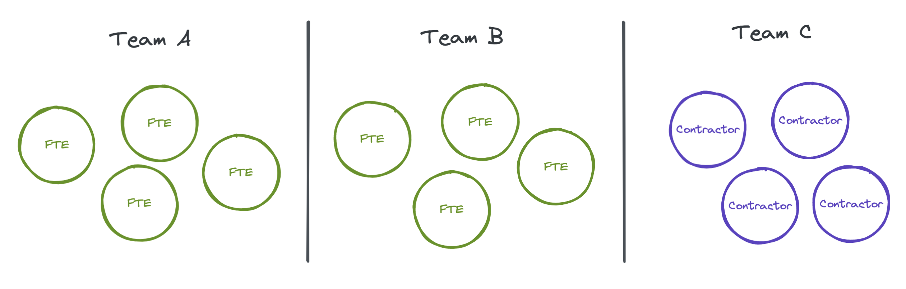
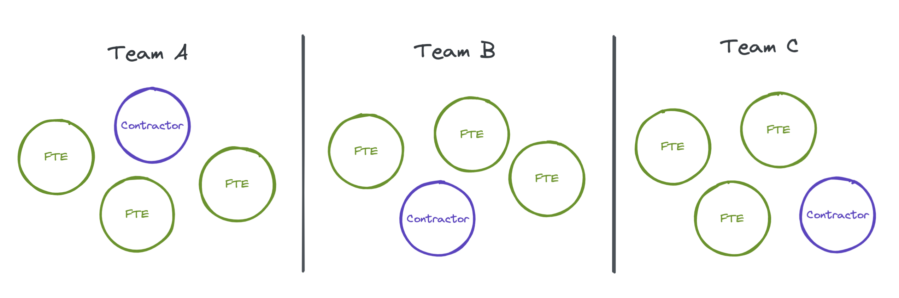

Fully integrate contractors into your team
Jul 18, 2022 · 4 minute read · CommentsLeadership
Your team has to hit a key milestone this year, but capacity is short. Everyone is worried, and tensions build up. As an Engineering leader, you are keen to reduce the burnout risk and consider hiring a couple of contractors or working with a software agency to speed things up without hiring full-time folks. But are you fully aware of the trade-offs?
This article covers the benefits and risks of working with engineering contractors as well as the measures you can put in place to maximise your chances of success!
Working with contractors and agencies can benefit your team in a few ways.
- 🏎️ Quickly add capacity to a team. Finding a great contractor is way faster than finding full-time engineers (FTE).
- 💼 Push a critical project over the finish line.
- 👩🔬 Help with highly specialised work and train the team in some new technology.
- 💸 Avoid the long-term commitment of full-time employees.
- 🌡️ Deal with seasonal surges of work.
Of course, working with agencies and contractors presents risks and trade-offs.
- 😕 Reduced vetting can lead to cultural misalignment and quality issues. Most agencies won’t allow you to interview their people. They already do their vetting! Similarly, hiring processes for independent contractors tend to be lighter for companies to remain competitive.
- 😞 Onboarding is still required to fully understand the product and make the right decisions when building new features, both from technical and UX standpoints.
- 😩 Incentives may be misaligned. Agencies want to finish the project they were hired for and upsell you. Independent contractors will be worried about finding their next gig instead of having to maintain the code they just wrote while working with you.
- 💸 When the experience level is equal, contractors are far more expensive than full-time employees.
The best way to hedge these risks is to treat contractors like any other member of the team. Contractors are people too! Building personal connections and trust with the rest of the organisation and staying tuned into current priorities will give them the context and tools to succeed.
Here is a list of practical measures you can put in place to maximise the success of your contractor bet.
- 🥐 Hold a welcome breakfast. On their first day, introduce them to the team in an informal setting. Doing it over a remote coffee works too!
- 🤗 Accelerated onboarding. Focus on getting to know the product, basic architecture and team practices. For example, this is how we write our React components.
- 🔐 Make sure they have access to all the systems and information they need. Whenever they need to ask for access, it reminds them they do not belong.
- 🥇 Set expectations as early as possible. Use your expectations framework if possible! Not every contractor may have worked in a highly integrated manner. Understanding your expectations and the support available to them will be vital in setting them up for success.
- 🤝 Include them in team rituals: all hands, refinement, ideation, and others. This will help them understand why you are building things and the trade-offs they should be making.
- 🎮 Team building/socials that help build relationships and trust
- 💬 Hold 1-1s with them. Perhaps you won’t focus on career goals, but you can share feedback early, course correct and understand what they need to succeed.
Another aspect to consider is team topology. I often see leaders spinning up contractor-only teams who work in quasi-isolation.

Instead, I recommend you consider spreading contractors across multiple teams whenever possible. This way, engineering contractors will benefit from a far more robust support network as they onboard. They can pair with more tenured engineers and pick up on their knowledge and context.

Hiring contractors or working with agencies is a significant investment. To get the most out of it, optimise for integrating them into your existing teams as much as possible.
🙌 Thanks for reading! Do you have other ideas to improve the way you work with contractors? Please share them with me!